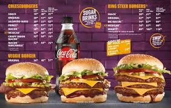

STEERS
The history of the company revolves around the Halamandaris family, whose family members are still part of the executive team today, with extensive experience in the food and franchising industries. Steers founder, George Halamandress had a vision to create a successful family-run business and the idea for Steers originated while he was on holiday in the United States where he came across innovative food industry concepts and ideas. He decided to bring these new food industry methods to South Africa, which was the starting point for the creation of a brand that would grow from strength to strength. Uncle George, as he was affectionately known, created the original Milky Lane ice cream parlours, followed in quick succession by the first South African steakhouse (the Rosebank Golden Spur), the Seven Steers steakhouse in Highlands North and the Black Steer in Yeoville in the early 1960s. He was also one of the first entrepreneurs to bring the franchising concept to South Africa.